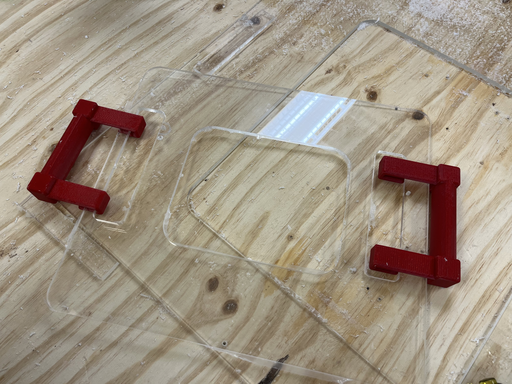
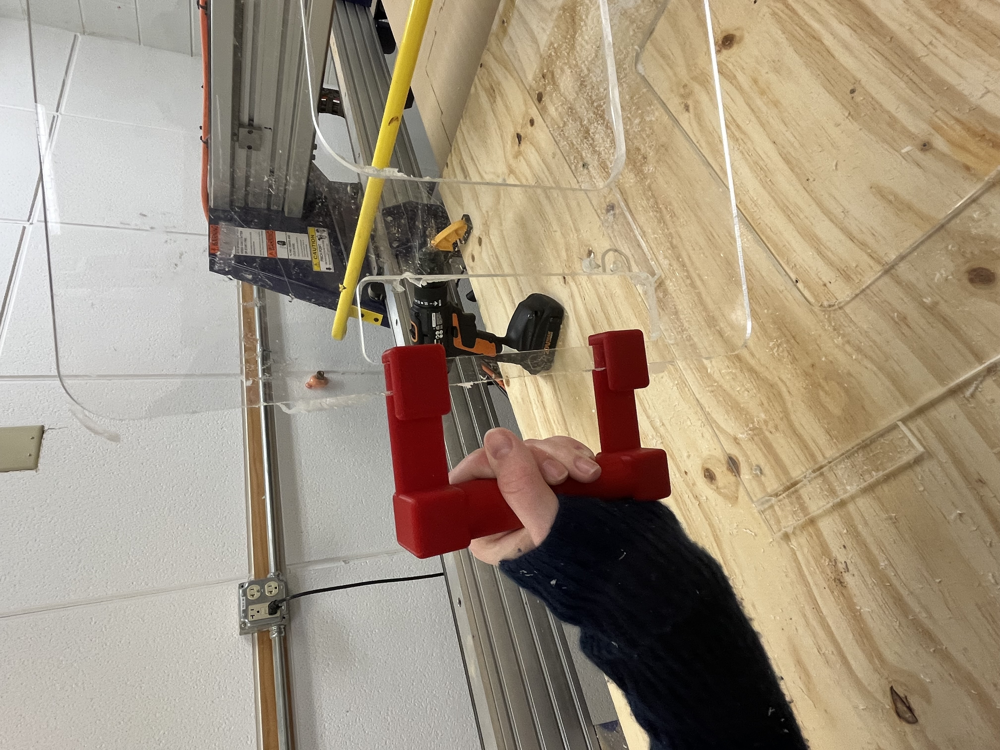

Selected engineering projects emphasizing design, iteration, and reflection.
Sight Board
Freshman year · PLTW: Introduction to Engineering Design
Role: CAD and Manufacturing Head
Highlight: Utilized CNC machine for high-precision acrylic fabrication.
Mechanical Automaton
Freshman year · PLTW: Introduction to Engineering Design
Role: Mechanical design and CAD
Highlight: Built a hand-cranked automaton with gears and levers.
Sight Board for Disabled Student
Problem
The challenge was to design a practical, durable tool that allowed a disabled student to interact with visual cues effectively.
The device needed to be intuitive, repeatable, and adaptable to the classroom environment, while remaining lightweight and safe.
Role
Oversaw CAD modeling, material selection, and manufacturing.
This project introduced me to hands-on fabrication and the iterative nature of translating designs from concept to physical reality.
I was responsible for ensuring that the design could be produced reliably and fit within time and resource constraints.
Design Process
Client Meeting
Hand-drawn sketch guiding the first discussion with the client.
I initiated the project by meeting with the client to understand their specific needs and expectations.
Presenting the initial sketch helped clarify the goals and allowed me to collect valuable feedback
about usability and desired features.
The client’s cooperative attitude allowed for flexibility in design, but it also required me to anticipate
practical limitations and make design decisions that balanced ideal functionality with manufacturability.
Defining Criteria and Constraints
Design Requirements:
The sight board had to be clear, robust, compact, easy to handle, and free of sharp edges.
Desk used in the classroom informed sizing and ergonomics.
Limitations:
Budget was restricted to $40, and the project had only three 1.5-hour class periods to complete.
Challenges:
Selecting the correct acrylic thickness to balance strength and portability, ensuring components could
be machined accurately, and making the design compatible with available CNC equipment required careful planning.
CAD Modeling
Using Fusion 360, I created detailed 3D models of all components. Iterative adjustments were necessary
for the snap-on handles to ensure a secure fit, teaching me early lessons about tolerance, fit,
and precision in engineering design.
Material Selection
I evaluated acrylic, polycarbonate, and PETG for durability, clarity, and ease of machining.
Acrylic was chosen due to its transparency and machinability, with careful attention to thickness and
CNC settings to prevent melting or chipping. This step introduced me to the impact of material properties
on manufacturing outcomes.
CNC Milling

Completed acrylic panel after CNC milling with adjusted spindle speed and feed rate.
CNC milling was my first hands-on experience with manufacturing. Initially, incorrect spindle and feed settings
caused acrylic to melt onto the cutting tool. Adjusting these parameters allowed me to produce clean, precise panels,
emphasizing the importance of experimentation and careful setup in real-world fabrication.
3D Printing Handles

Snap-on handle printed in PLA and fitted to the acrylic panel.
Printed PLA handles underwent iterative fitting adjustments to ensure secure attachment to the acrylic panel.
This phase reinforced the importance of testing and refining prototypes to achieve functional, user-friendly components.
Reflection
Completing the Sight Board was my first substantial encounter with the engineering design process.
It taught me how theoretical plans are transformed into tangible objects through manufacturing and iterative refinement.
I developed a foundational understanding of how material properties, tolerances, and machine settings interact to influence outcomes.
This project ignited my passion for engineering, showing me that careful design, hands-on experimentation, and thoughtful problem-solving
can turn abstract concepts into functional, meaningful devices. It also prepared me to approach future projects with confidence in both
design and fabrication.
Mechanical Automaton
Problem
Design and build a hand-cranked mechanical automaton capable of telling a simple story through motion,
while demonstrating fundamental mechanical principles such as cams, rotational motion, vertical translation,
and mechanical linkages. The automaton needed to clearly expose its internal mechanisms so that motion paths
and cause-and-effect relationships could be observed directly.
Role
Led mechanical design and CAD modeling.
I was responsible for conceptualizing the mechanism, selecting cam types, modeling all moving components in CAD,
and iterating through physical prototypes to resolve motion, stability, and friction issues.
Design Process
Initial Sketches
I began with hand sketches to explore how rotational motion from a hand crank could be converted into
multiple, distinct motions. The goal was to create a narrative moment: a carousel that spins while its
riders move up and down, echoing a parent lifting a child to mimic a broken carnival ride.
These sketches helped me reason through cam profiles, follower motion, and how multiple mechanisms
could coexist on a single axle without interference.
CAD Design
After settling on a general layout, I transitioned the design into Fusion 360.
This was my first experience modeling a system with interacting mechanical components rather than
static parts. I designed two cams mounted on a shared axle: a snail cam to generate vertical motion
for the figures, and a circular cam used to transfer rotational motion to a secondary cam connected
to the carousel. Iterations focused on alignment, clearance between moving parts, and ensuring
that motion paths were mechanically feasible.
Prototyping & Testing
Cardboard and early component prototype used to evaluate motion, stability, and scale.
Before committing to final materials, I built a physical prototype using cardboard to test scale
and motion behavior. This prototype immediately revealed instability in the carousel’s vertical axle,
which was too tall and caused the structure to tilt during rotation. In response, I shortened the axle
and expanded the surrounding enclosure, improving both mechanical stability and visibility of the cams.
This stage reinforced the importance of testing mechanisms physically rather than relying on CAD alone.
Final Assembly
Completed automaton demonstrating synchronized rotational and vertical motion.
The final automaton used 3D printed cams, bushings, and a hand crank, wooden dowels for axles,
and a laser-cut wooden enclosure. During testing, insufficient friction between the interacting
cams prevented reliable rotation of the carousel. This was resolved by adding a rubber band
around the horizontal cam to increase friction, enabling consistent motion transfer.
Final testing focused on smooth operation, visibility of mechanisms, and narrative clarity.
Reflection
This project marked my first true introduction to mechanical engineering.
While the automaton itself was mechanically simple, it fundamentally changed how I understood motion,
design, and problem-solving. Designing cams and linkages transformed abstract physics concepts into
tangible cause-and-effect systems that I could see, hear, and feel.
More importantly, this project taught me that engineering is an iterative process driven by failure,
observation, and refinement. Issues with friction, stability, and alignment were not setbacks but entry
points into deeper understanding. Alongside the Sight Board project, this automaton sparked my interest
in engineering by showing me how thoughtful design can turn simple components into meaningful,
expressive systems.